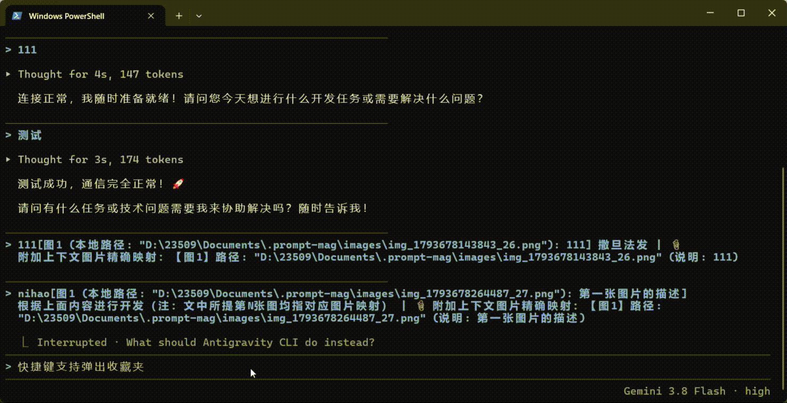
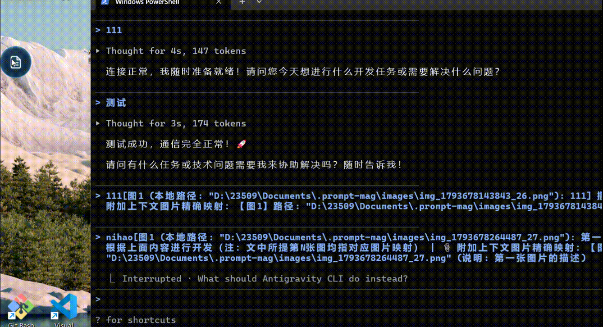
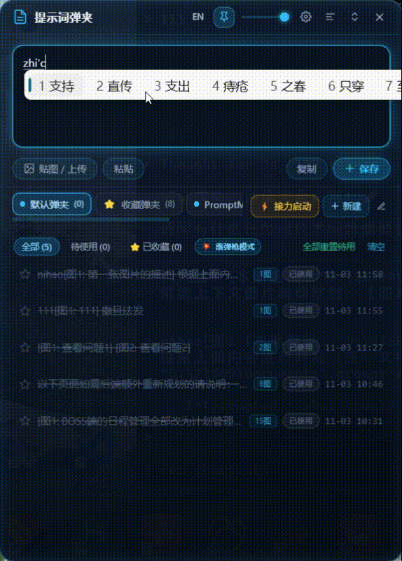

专为 CLI 重度使用者打造的 Windows 桌面悬浮弹夹：整天泡在终端和 CLI Agent 里的人都懂，提示词翻来覆去地敲、图片反复地拖，有多烦。零歧义图文强绑定、三种出弹模式（霰弹枪/左轮/手枪）、光标处免切瞬发直贴、CLI Agent 任务自动接力与文件互斥写锁。完全本地运行：数据 100% 存本地，零云端、无登录、无遥测，开箱即用。 The Windows floating prompt magazine built for heavy CLI users — if you live in the terminal with CLI agents all day, you know the pain of retyping prompts and re-dragging images. Bulletproof image-prompt binding, 3 firing modes (Shotgun / Revolver / Pistol), direct-to-cursor auto-pasting, and CLI Agent auto-relay with write locks. Fully local: 100% on-device data, zero cloud, zero telemetry, no login required.
以下全部来自真实桌面与终端的运行录屏：提示词出弹、带图任务投喂、Agent 接力——所见即所得。 Every clip below is a real screen recording from a live desktop and terminal: prompt ejection, image-task delivery, and agent relay, exactly as it happens.



不是平庸的网页端提示词记事本，而是一个具备图文编译、光标直贴、多弹夹管理与 Agent 接力写锁的常驻生产力底座。 Not another web-based prompt directory — a desktop firing system equipped with multi-image compilation, cursor auto-paste, and multi-agent concurrency locks.
悬停在 Windows 屏幕边缘，贴边半透明自动收拢。单击瞬发极速输入框，右键快速切换弹夹，全局热键（Alt+Q）秒级召之即来，用完即退。Floats on the screen edge and smoothly tucks away. One click pops the composer; right-click switches magazines. Summons via Alt+Q in milliseconds.
HOTKEY: Alt+Q霰弹枪（严格按顺序逐条执行，适合检查单与重构流）、左轮（随机抽取未完成条目，打破思维定式）、手枪（最新保存条目优先顶格出击，高频连续微调）。Shotgun (sequential for checklists & refactors), Revolver (randomized to spark creative angles), and Pistol (most-recent-first for rapid tuning iterations).
Shotgun / Revolver / Pistol按下出弹热键（Alt+V），无需切换窗口、无需手动 Ctrl+V，PromptMag 自动在后台将当前条目编译并直接粘贴到前台任何应用光标所在位置！Press the hotkey (Alt+V) without switching windows or pressing Ctrl+V. PromptMag compiles and injects the prompt right at your cursor.
HOTKEY: Alt+V专为 Claude 3.5 Sonnet / GPT-4o / DeepSeek 打造。拖入图片自动关联内联标记 [图1: 批注]，自动生成结构化绝对路径映射表，彻底根除大模型多图混淆与顺序看错。Custom-engineered for Claude 3.5 Sonnet & GPT-4o. Inline tokens [Img 1: Note] with structured absolute path tables guarantee the LLM never confuses images.
Zero Confusion支持无限新建项目弹夹（如前端重构、安全排查）。专属「⭐ 收藏弹夹」永不清理；支持在任何网页或代码中选中一段文字或图片，一键瞬录进收藏库（Alt+T）。Create unlimited magazines by project. The Starred Magazine is permanently preserved. Select any text or image in external apps and collect it instantly with Alt+T.
HOTKEY: Alt+T / Alt+X无缝打通 Claude Code、Gemini CLI、Aider 等命令行 Agent。自动生成 next_tasks.md 三态机文件，独创独占写锁机制，彻底防止多 Agent 协同覆写冲突。Seamlessly bridges Claude Code, Gemini CLI, and Aider. Auto-syncs next_tasks.md with a dedicated write lock to eliminate concurrent overwrite collisions.
next_tasks.md & Locks每个弹夹独立设定生命周期规则（1小时至7天或永不清理）；收藏弹夹自动免疫清理；清空操作具备暗黑玻璃拟态双重确认，绝不误删重要提示词。Independent retention policies per magazine (1 hr to 7 days, or never). Starred magazines are strictly immune. Double-confirmation prevents accidental wiping.
Safe Lifecycle不用注册，不用登录，无云端服务器，无数据遥测。你的所有提示词、图片和代码机密绝对保存在本机硬盘中，断网环境下毫厘不差稳定运行。No signup, no login, no cloud servers, no telemetry. Every single prompt and screenshot stays encrypted on your local drive, working offline flawlessly.
Offline Ready原生按键注入辅助工具，仅 6KB 原生体积，热键延迟仅毫秒级别；提供免安装 Portable 绿色便携版，解压即用，插上 U 盘即可随身携带个人生产力弹药库。Native C# injection helper at just 6KB, ensuring single-digit millisecond latency. Single-file Portable edition runs right from a flash drive without installation.
Portable .exe像换枪械弹匣一样管理提示词，不同场景切换最佳输出节奏。 Switch eject modes just like changing magazines — dialed for specific development scenarios.
队列中第一条最旧的未完成提示词优先弹出，执行完毕后自动出下一条。适合步骤紧凑的有序工程流，如发布清单、测试流程或需求逐项重构。Pops the oldest pending prompt in the queue. Perfect for ordered workflows like deployment checklists, step-by-step refactoring, and QA passes.
在弹夹所有未使用的提示词中随机抽取一条弹出。适合发散思维、探索架构设计死角或进行安全边缘测试，从意想不到的角度突袭问题。Randomly draws any pending prompt. Designed for brainstorming, architectural exploration, and fuzz testing edge cases from unexpected angles.
后进先出（LIFO）。最新录入或调优好的那条提示词永远排在出弹口。当你刚刚打磨出一条完美的 Prompt 正在手感上时，连续高频使用。Last-in, first-out (LIFO). The prompt you just crafted or refined stays chambered at the top. Keep firing it while it's hot.
告别单次会话只能跑一条指令的局限。PromptMag 与终端 Agent 形成闭环，自动分配任务并提供独占文件互斥写锁。 Break free from single-shot chats. PromptMag creates an automated loop with CLI agents, dispatching tasks with mutex write locks.
在 PromptMag 中录入多个复杂开发任务，自动同步为带机器注释的标准 next_tasks.md。Compose multiple complex tasks in PromptMag; auto-synced to machine-annotated next_tasks.md.
点击「⚡ 生成接力启动指令」，在 Claude Code 或终端中粘贴，Agent 立即接入调度。Click "⚡ Generate Relay Prompt", paste into your terminal, and the agent begins execution immediately.
Agent 认领任务并标记 [~]，同时加锁防止外部改动覆盖代码；完成后标记 [x] 释放锁。The agent claims the task with [~] and locks the file. When tests pass, it marks [x] and unlocks.
无需人工守护，下一条待办任务自动被唤醒并接力执行，直至整个弹夹全部顺利搞定。Runs autonomously: the next pending task is triggered automatically until the entire magazine is cleared.
下载即用，不用注册任何账号，不用配置任何远程服务。 Download and go — no registration, no cloud setup, runs 100% on your machine.
从 GitHub Releases 下载最新的 PromptMag-Setup.exe 安装版，或下载无需安装的 PromptMag-Portable.exe 绿色单文件版。Grab the installer or the single-file Portable version from GitHub Releases.
点击悬浮球或按 Alt+Q 打开极速输入框，输入你的常用提示词或直接拖入缺陷截图，自动编译保存。Click the floating ball or press Alt+Q to type prompts and drop screenshots.
在 VS Code、Cursor 或终端中聚焦光标，按 Alt+V 出弹直贴；选中网页文字时按 Alt+T 瞬间收录！Focus your cursor in VS Code or Cursor, press Alt+V to fire; select text & press Alt+T to collect!
了解更多 PromptMag 的运行原理与设计哲学。 Learn more about PromptMag's design architecture and philosophy.
100% 本地软件。所有弹夹数据、提示词文本和关联截图均保存在你本地的电脑硬盘中。没有注册系统，没有登录界面，没有云端同步，甚至拔掉网线也能顺畅运行。100% local. Prompts, magazines, and image attachments stay entirely on your disk. No accounts, no telemetry, runs completely offline.
在多图场景下，直接向 Claude / GPT-4o 粘贴多张图片常常导致模型把第 1 张图看成第 2 张。PromptMag 在正文中精准锚定 [图1: 按钮错位] 并在末尾生成排他性路径映射表，彻底根治大模型认错图片顺序的硬伤。Multimodal LLMs often confuse sequential images. PromptMag binds inline tokens to structured mapping tables so models never read the wrong image.
PromptMag 支持所有功能快捷键自定义修改，并具备严格的单键约束与防冲突检测机制。若快捷键被系统其他全局软件占用，会有友好轻量提示并允许重新绑定。All hotkeys can be fully customized with real-time conflict detection and friendly prompts if an external app occupies a key.
收藏弹夹是永久保留的专用弹药库，永远不参与定时自动清理。通过快捷键 Alt+T 在任何软件中选中文本或图片即可瞬间收录；通过 Alt+X 可以光标就地呼出收藏弹窗一键插入常用语。The Starred Magazine is immune to auto-cleanup. Select text or images and press Alt+T to collect; press Alt+X to browse and insert anywhere.
PromptMag 完全开源免费。今天就将高频 Prompt、缺陷截图与任务清单装进桌面弹夹。 PromptMag is free and 100% open source. Load your go-to prompts and screenshots into your desktop magazine today.